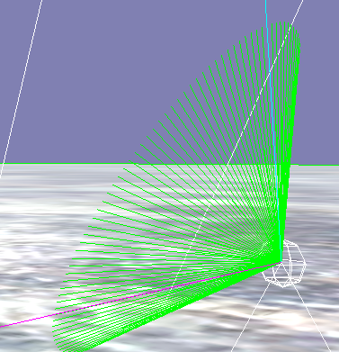

SirNate0
Per Wikipedia, I was under the impression that Quaternion::Slerp was supposed to return points along a great-circle arc between two quaternions. Could someone explain why there seems to be a cone, and not a disk, formed when tracing out the path followed by Slerp? Or point out where I’ve made a mistake?
auto v = Vector3::FORWARD;
auto dr = scene_->GetComponent<DebugRenderer>();
for (int i = 0; i <= 100; ++i)
{
dr->AddLine({0,0,0.0},Quaternion(v,Vector3::UP).Slerp({v,Vector3::RIGHT},0.03*i) * v,Color::GREEN,false);
// dr->AddLine({0,0,0.01},Quaternion{90,Vector3::UP}.Slerp({-90,Vector3::RIGHT},0.03*i) * v,Color::RED,false);
}
dr->AddLine({0,0,0.0},Quaternion(v,Vector3::UP).Slerp({v,Vector3::RIGHT},0) * v * 2,Color::CYAN,false);
dr->AddLine({0,0,0.0},Quaternion(v,Vector3::UP).Slerp({v,Vector3::RIGHT},1) * v * 2,Color::MAGENTA,false);
